The second-floor classroom has cream walls, east windows facing a paved courtyard, and desks in rows. Begin in a medium shot of Evan beside the windows. Evan has short black hair, a navy hoodie, and round glasses. He turns over his returned test. Cut close: “38/100” is clear; other marks are indistinct. Maya has a dark ponytail, a mustard cardigan, and silver stud earrings. Leo has curly brown hair, a gray sweatshirt, and a red wristband. Maya leans over and points at the score. Leo looks, smirks, and nudges Maya; she covers a mocking grin. Evan lowers his eyes and pulls the paper toward himself. End close on his hand covering the score.
| kind | fiction |
| people | evan: Evan has short black hair, a navy hoodie, and round glasses.; maya: Maya has a dark ponytail, a mustard cardigan, and silver stud earrings.; leo: Leo has curly brown hair, a gray sweatshirt, and a red wristband. |
| place · time · mood | The second-floor classroom has cream walls, east windows facing a paved courtyard, and desks in rows. · · |
| exact words | 38/100 |
| seconds · aspect · sound | 15 s · 16:9 · none (from the story) |
| progression | |
| specific · first frame | none · none |
raw
{
"prose": "The second-floor classroom has cream walls, east windows facing a paved courtyard, and desks in rows. Begin in a medium shot of Evan beside the windows. Evan has short black hair, a navy hoodie, and round glasses. He turns over his returned test. Cut close: “38/100” is clear; other marks are indistinct. Maya has a dark ponytail, a mustard cardigan, and silver stud earrings. Leo has curly brown hair, a gray sweatshirt, and a red wristband. Maya leans over and points at the score. Leo looks, smirks, and nudges Maya; she covers a mocking grin. Evan lowers his eyes and pulls the paper toward himself. End close on his hand covering the score.",
"kind": "fiction",
"people": [
"evan: Evan has short black hair, a navy hoodie, and round glasses.",
"maya: Maya has a dark ponytail, a mustard cardigan, and silver stud earrings.",
"leo: Leo has curly brown hair, a gray sweatshirt, and a red wristband."
],
"place": "The second-floor classroom has cream walls, east windows facing a paved courtyard, and desks in rows.",
"time": "",
"mood": "",
"exact_words": [
"38/100"
],
"seconds": 15,
"aspect": "16:9",
"sound": "none",
"sound_why": "from the story",
"progression": [],
"specific": [],
"first_frame": "",
"carried": [
"the teacher: the man in the teacher photo (grey long-sleeve shirt)",
"Evan: the young man with braids in his photo",
"Maya: the young woman with the fringe in her photo",
"Leo: the young man in the old black-and-white portrait, in colour here",
"the classroom: the room in the classroom photo"
]
}


all 5 sent as named references to minimax-h3
| person | One adult man, shown from head to upper thighs.: Light skin, short thick wavy brown hair, blue-grey eyes, angular face, faint stubble, closed mouth and serious expression. Looking toward the camera, torso slightly turned, arms folded across his chest. Wearing a plain light-grey long-sleeved crew-neck shirt and blue jeans with contrasting stitching. |
| place · light | Plain white to very pale grey background; no visible setting details. · Soft, bright, even lighting with mild shadows beneath the chin and in clothing folds. |
1956 characters (limit 2,000) · 5 beats · 5 shots · code check: length yes exact words yes
FORMATCreate a 15-second silent classroom drama about a returned test, widescreen 16:9, inside @classroom, matching its wooden desks, grid windows, green lockers and green chalkboard. LOOKPhotorealistic colour, soft morning window light, restrained performances and an uncomfortable mood. CONTINUITYFive coherent shots preserve reference likenesses, clothing, desk positions and one test paper throughout; use the images as identity and setting references, not pasted photographs. BEAT 10–3 seconds: medium two-shot, @teacher, light-skinned with short wavy brown hair, faint stubble, grey long-sleeved shirt and blue jeans, hands a face-down white test paper to seated @evan, with short black twists, silver necklaces and a black sweatshirt with white scribbles and red patches; wooden desks line the aisle, gentle lateral slide; @evan now holds the paper and @teacher's hands are empty. BEAT 23–6 seconds: over-shoulder close-up, @evan turns the test face-up on the wooden desktop; its large handwritten score reads exactly '38/100', unobstructed and legible, slow push in. BEAT 36–9 seconds: medium close-up, @maya, brown hair with bangs, white ruffled blouse and black vest, already leaning from the next desk, points at the score with a teasing expression; the green board is softly visible behind, gentle lateral slide. BEAT 49–12 seconds: medium two-shot, @leo, clean-shaven with swept-back wavy hair and the reference face, rendered in natural colour wearing a modern charcoal sweatshirt, nudges @maya with his elbow, a smug smirk on his face; adjacent wooden desks remain visible, slow push in. BEAT 512–15 seconds: wider establishing view of the three adjacent desks, @evan sits with downcast eyes, the paper close against his body and his palm completely obscuring the score; @maya's hand rests over a mocking grin, @leo remains smirking. HOLDHold this still, readable tableau for all three seconds. GRADENatural colour grade, measured pacing. NEGATIVESNo audio, subtitles, text overlays, umbrella or studio props.
beats as the writer listed them
| # | range | shows |
|---|---|---|
| 1 | 0–3 s | @teacher hands the face-down test to seated @evan. |
| 2 | 3–6 s | @evan turns the test over, revealing the clear score. |
| 3 | 6–9 s | @maya points at the score from the adjacent desk. |
| 4 | 9–12 s | @leo smirks while nudging @maya with his elbow. |
| 5 | 12–15 s | Still tableau: @evan shields score; @maya conceals grin; @leo smirks. |
the MCP's prompt for the same brief, for comparison (2698 chars · minimax-h3 · 15 s · audio off)
FORMATCreate one continuous 15-second photorealistic cinematic shot, widescreen 16:9, silent with no dialogue, no music, no subtitles. LOOKUse ALL FIVE named references faithfully. CONTINUITYIdentity assignments must never change: @TEACHER is the adult man with short curly hair, wearing the same grey long-sleeve shirt; @EVAN is the young adult male student with braids, preserve his face and hairstyle and black patterned sweatshirt; @MAYA is the young adult female student with straight brown hair and fringe, preserve her exact face and hair, seated at a student desk wearing her white blouse and dark vest, absolutely NO umbrella or studio props; @LEO is the young adult male student from the vintage monochrome portrait, preserve his facial features and swept-back hairstyle, but render him naturally in full colour in present-day casual clothes, no formal vintage suit, no bow tie, no portrait frame. LOOKAll students are adults. LOOKThe entire scene takes place in the EXACT room in @CLASSROOM: preserve its rows of brown wooden desks and metal frames, large gridded rear windows, green chalkboard on right wall, pale green walls, green lockers, ceiling fixtures and orientation. LOOKNot a generic replacement classroom. LOOKSoft morning daylight from these windows. LOOKStage Evan at an aisle desk, Maya at the next desk and Leo immediately beside Maya within nudging distance. LOOKCamera starts medium-wide from the front-side aisle so faces and classroom are recognizable, then smoothly pushes closer and slightly higher toward Evan's desktop to make the test score legible while retaining the neighboring students' reactions. LOOKNatural realistic restrained acting, consistent faces throughout. LOOKTimeline: 0–4 seconds the teacher walks along the row and hands Evan a single returned test face down on his desk. LOOK4–6 seconds Evan turns the paper over; show its top clearly with the large clean handwritten red score exactly '38/100', facing the camera legibly. LOOKHold this score visibly unobstructed. LOOK6–9 seconds Maya leans from the next desk and points directly at the score without obscuring the digits. LOOK9–11 seconds Leo looks at the same score, smirks subtly and gently nudges Maya with his elbow. LOOK11–12.LOOK5 seconds Maya raises a hand to cover a mocking grin. LOOK12.LOOK5–15 seconds Evan lowers his eyes, visibly embarrassed, and draws the same paper toward himself, placing his hand over the score; end with the score fully hidden by his hand. LOOKThe teacher remains neutral. LOOKPreserve causality, one paper, anatomically correct hands, believable small gestures, no exaggerated laughter, no cuts, no scene transitions. LOOKPrioritize exact reference identities, exact reference room, chronological actions, legible 38/100 before the final concealment.
guide.md as given to the writer
# The operational prompt (text-to-video)
The Magic Hour guide says: specify the subject, one action, camera move, framing and mood; request only audio and
duration the model supports; then review the actual result. The prompt that works is ONE prose paragraph, under 2,000
characters, in this order:
1. FORMAT: the duration, the kind of piece, the subject, the aspect, in one sentence.
"Create a 16-second cinematic advertisement for Petal & Stem, a small neighbourhood flower shop. Widescreen 16:9."
2. LOOK: medium, light, mood, the texture of the world, in one sentence. For action, the look line also carries the
ENERGY in plain words ("tight, fast-paced editing, roaring engines, cars accelerating hard, streetlights streaking
past"): the model renders the pace it is told, and a race described calmly comes out slow.
"Photorealistic, intimate, warm natural dawn sunlight, soft golden highlights, authentic lived-in neighbourhood."
3. CONTINUITY: how many shots, and what stays the same across them, in one sentence.
"Four coherent shots with natural edits, same florist, shop and bouquet throughout."
4. BEATS: timed ranges that together cover the whole duration, in order. Each beat, in this order: the time range,
the framing, the subject with one identifying detail, ONE action, one environment detail, the camera or lens.
"0–4 seconds: exterior medium-wide shot at dawn, an adult florist in a sage-green apron unlocks and opens the
wood-and-glass shop door, warm sunlight on the flower buckets beside the entrance."
One action per beat. Never two things happening. Never a thing that must appear later mentioned early.
The request's own verbs are the beats' actions and each gets its own beat: "arranges a bouquet" is a beat of hands
placing stems, and wrapping is a different action; do not merge two of the request's actions into one beat.
When possession changes, the beat ends with the new state stated plainly: "the customer now holds the bouquet, the
florist's hands are empty".
The last beat is a separate establishing shot with no new action: the place alone, or the people standing still.
Every beat has a camera MOVE (push, slow orbit, lateral slide, ease back, handheld follow), never "stationary" or
"locked-off" except the final hold. Name the key object concretely once (blush pink roses, cream flowers, brown
kraft paper), not "a bouquet"; the model renders nouns it is given.
A beat is 3–6 seconds, so a 16-second clip has 3–5 beats and a 30-second clip 5–8. Two-second beats make a
cut every two seconds, which the model renders as a jumble; the shot count in CONTINUITY equals the beat count.
5. EXACT WORDS: any lettering the video must show, quoted once, inside the beat where it is seen.
"clear tasteful shop sign reads exactly 'Petal & Stem'."
6. SOUND (only when audio is on): ambient, or the character of music, or the spoken lines quoted with their time
range and who speaks. Narration and dialogue are the expensive part of the budget; keep them short.
7. HOLD: the last beat ends on a still, readable image. "Hold on the storefront for the final two seconds."
8. GRADE: colour treatment and pacing, one short sentence. "Gentle cinematic colour grade, calm uplifting pacing."
9. NEGATIVES: one line, last, only what the model would otherwise add. "No voiceover, no subtitles, no text overlays."
Quality words are descriptive, never technical: cinematic, photorealistic, shallow depth of field, natural hands and
anatomically correct movement, realistic textures. No resolution words, no "8k", no seeds, no camera brands.
Never: shot-list headings, a separate negatives block, a constraint on every sentence, "do not show X" for things that
appear later, repeating a sentence, a sign mentioned in a beat where it must not be seen.
Budget: about 450 characters go to format, look, continuity, hold, grade and negatives. The rest is beats, about 200
characters each. Compress the story into the beats; do not paste it.
# Image-to-video (a start frame is supplied)
Same slots, same order, two changes:
- FORMAT shrinks to the duration and "matching the source image" (the aspect is the image's).
- LOOK becomes PRESERVE: name what the image already fixes and must stay: "Preserve the woman's face, dark hair in a
low bun and cream jacket, and the bouquet of yellow, magenta, cream and red flowers in pale paper, exactly as in the
image; keep the morning light and the doorway."
- The first beat describes the image as it is and the first motion out of it, so the model continues the picture
instead of cutting away. Later beats may cut, with the continuity sentence naming the same people and the bouquet by
the same words every time.
# When people carry the scene (a handoff, a conversation, a reunion)
The MCP's scene 2 clip read as more alive than ours with the same still route. The differences were in the prompt:
- ONE continuous shot with a very slow push in, not five cuts in 16 seconds. On image-to-video every cut abandons the
start frame; one shot keeps the faces and lets a performance develop.
- Performance verbs and eye lines in every beat: "exchanging warm eye contact", "he smiles warmly and reaches out with
both hands", "they exchange affectionate smiles", "she steps close beside him". Behaviour, not inventory.
- A physically ordered action: "only after he has a firm grip does she release it".
- PRESERVE is three anchors per person (hair, one garment, one detail) and one line for the object, said once. The
identity is in the start frame; a 600-character inventory repeated in every beat buys nothing and starves the beats.
- End on the faces: "a stable medium two-shot showing both faces and the bouquet, hold three seconds", not a wide
establishing shot of people standing still.
- Framing: the seed still should be a medium shot where faces are large enough to act; a medium-wide doorway reads
as staging.
# A sequence inside a film (case 2)
- Say the PLACE first and relationally: "inside the Resolute's bridge: narrow steel interior, slanted front windows
overlooking a cold grey ocean". Never list the ship's exterior or the sea as things to preserve in an interior clip;
the model will build them. Only the bible entries that appear in this clip go in.
- People from a start frame get their positions: "Vale at left, the lookout in the centre, the helmsman at right".
- A distant thing gets its scale and where it is seen: "a tiny silhouette on the horizon through the windows".
- Lines are short and distinct, one per beat ("Enemy cruiser on the horizon!" … "Fire!"), never one line for the
whole clip; with audio on, a single quoted line is repeated by the model.
- The last sentence states the clip's place in the film: "clip 1 of 3: end on the order; no guns firing, that is the
next clip".
| call | text-to-video · model minimax-h3 · 15 s · 16:9 · 480p · audio off · references none |
| credits · time | 360 credits · 178 s wall · rendered 15.1 s |
| prompt sent | the operational prompt above, unchanged |
frames: first, each beat's middle, last
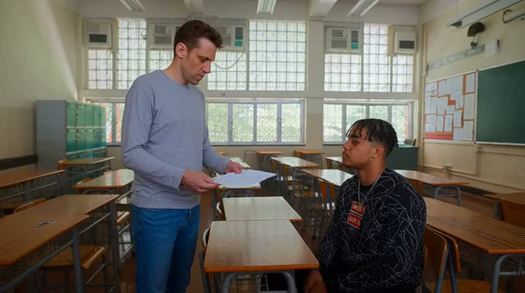
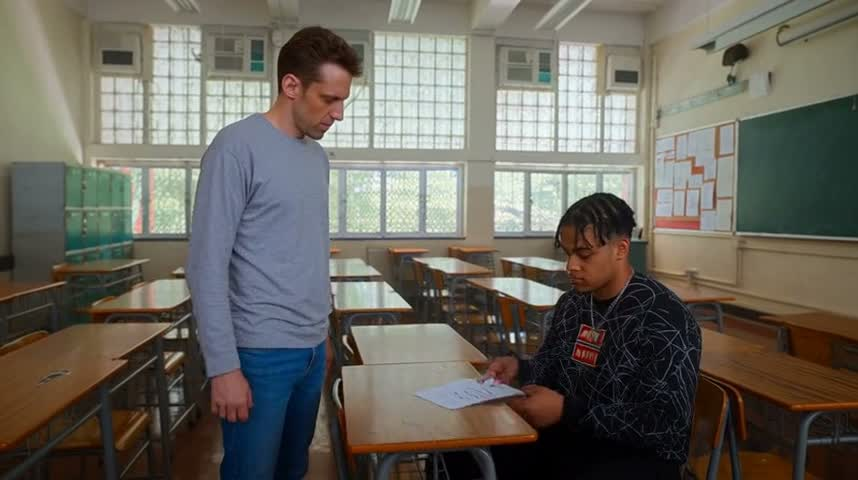
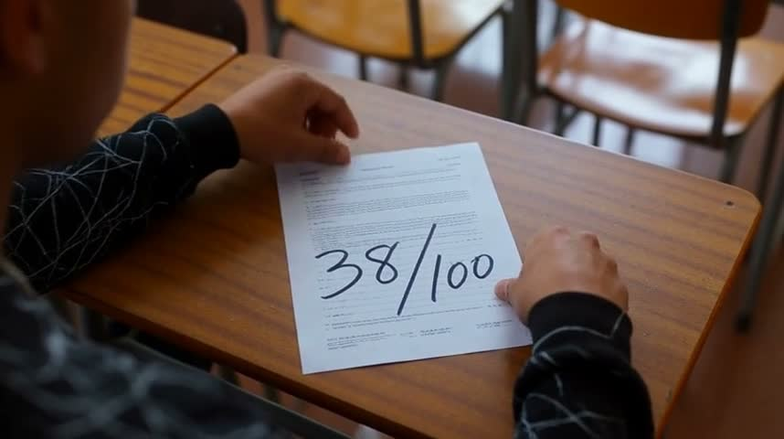
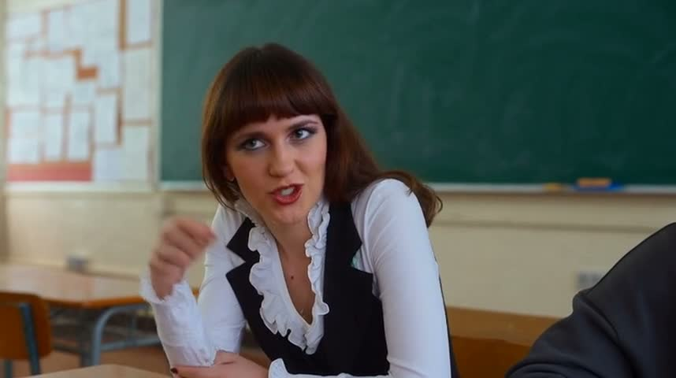
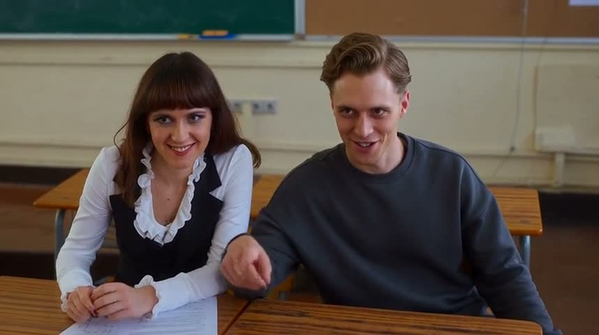
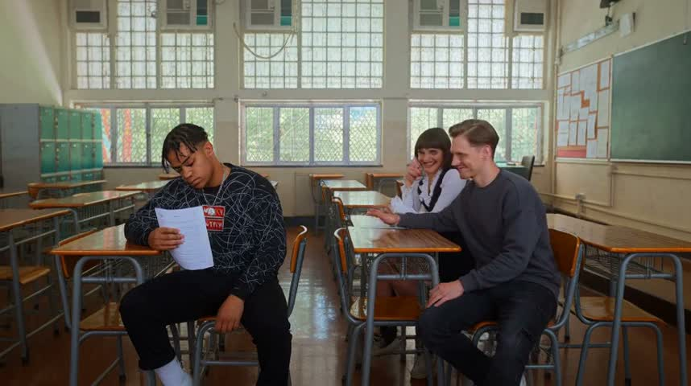
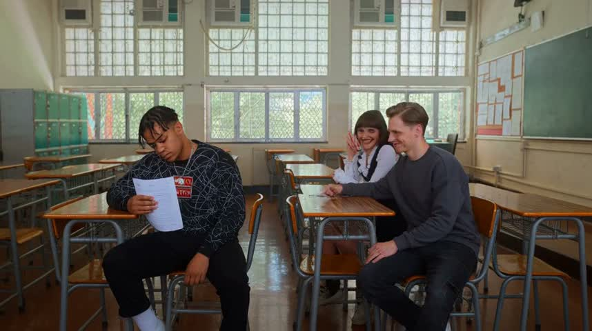
| beat | subject present | action seen | evidence |
|---|---|---|---|
| 1 | yes | unclear | The first frame shows the teacher offering a sheet to seated Evan; at 1.5 seconds Evan holds it over his desk. The handoff is supported, but the required face-down orientation is not established. |
| 2 | yes | unclear | At 4.5 seconds the test is face-up between Evan's hands and clearly displays 38/100. The actual turning-over motion is not visible in the supplied frames. |
| 3 | yes | unclear | Maya is seated with one hand raised in a gesture, looking toward Evan's direction. Neither the score nor a clear pointing finger directed at it is visible in this shot. |
| 4 | yes | no | Leo smiles mischievously beside Maya, but his hand extends forward rather than showing an elbow nudge against her. |
| 5 | yes | no | Evan holds the paper upright with its blank side toward the others, and Leo smirks. Maya raises a hand near her face but leaves her grin visible. Maya's and Leo's hand poses change between 13.5 seconds and the last frame, so the tableau is not fully still. |
| exact words | '38/100' reads “38/100” yes |
| identity vs the reference | teacher yes The teacher retains the reference's short brown hair, long narrow face, grey long-sleeve shirt, and blue jeans. Evan yes Evan retains the reference's braids, facial appearance, necklace, and black sweatshirt with white linework and red chest patches. Maya yes Maya retains the brown hair with blunt fringe, similar facial features, white ruffled blouse, and black waistcoat. Leo yes Leo's swept, side-parted hair and narrow facial features resemble the portrait in colour. His formal portrait clothing is replaced by a dark crew-neck sweatshirt. classroom yes The room preserves the distinctive gridded windows, upper window air conditioners, green lockers, wooden desks with metal frames, and right-wall green chalkboard. |
| same people and place | yes |
| last frame holds | no |
| artifacts | Seating continuity is questionable: Maya and Leo appear directly side-by-side in beat 4, while the final wide view places Maya farther behind Leo.; No obvious major facial or limb deformation is visible in the supplied frames. |
| failures | beat 4 must visibly show: @leo smirks while nudging @maya with his elbow. (seen: Leo smiles mischievously beside Maya, but his hand extends forward rather than showing an elbow nudge against her.); beat 5 must visibly show: Still tableau: @evan shields score; @maya conceals grin; @leo smirks. (seen: Evan holds the paper upright with its blank side toward the others, and Leo smirks. Maya raises a hand near her face but leaves her grin visible. Maya's and Leo's hand poses change between 13.5 seconds and the last frame, so the tableau is not fully still.); the final two seconds hold one still image with no new action |
| call | text-to-video · model minimax-h3 · 15 s · 16:9 · 480p · audio off · references none |
| credits · time | 360 credits · 107 s wall · rendered 15.1 s |
| failures folded in | beat 4 must visibly show: @leo smirks while nudging @maya with his elbow. (seen: Leo smiles mischievously beside Maya, but his hand extends forward rather than showing an elbow nudge against her.); beat 5 must visibly show: Still tableau: @evan shields score; @maya conceals grin; @leo smirks. (seen: Evan holds the paper upright with its blank side toward the others, and Leo smirks. Maya raises a hand near her face but leaves her grin visible. Maya's and Leo's hand poses change between 13.5 seconds and the last frame, so the tableau is not fully still.); the final two seconds hold one still image with no new action |
| prompt sent | Create a 15-second silent classroom drama about a returned test, widescreen 16:9, inside @classroom with wooden desks, grid windows, green lockers and green chalkboard. Photorealistic colour, soft morning window light, restrained performances, uncomfortable mood. Five coherent shots preserve reference likenesses, clothing, desk positions and one test paper throughout; use the images as identity and setting references, not pasted photographs. 0–3 seconds: medium two-shot, @teacher, light-skinned, short wavy brown hair, faint stubble, grey long-sleeved shirt, blue jeans, hands a face-down white test to seated @evan, short black twists, silver necklaces, black sweatshirt with white scribbles and red patches; desks line the aisle, gentle lateral slide; @evan holds the paper, @teacher's hands empty. 3–6 seconds: over-shoulder close-up, @evan turns the test face-up on the wooden desktop; large handwritten score reads exactly '38/100', unobstructed and legible, slow push in. 6–9 seconds: medium close-up, @maya, brown hair with bangs, white ruffled blouse, black vest, already leaning from the next desk, points at the score teasingly; green board softly visible behind, gentle lateral slide. 9–12 seconds: medium two-shot, @leo, clean-shaven, swept-back wavy hair, reference face, natural colour, modern charcoal sweatshirt, visibly presses his bent elbow against @maya's upper arm in a nudge while smirking; adjacent desks visible, slow push in. 12–15 seconds: wider view of three adjacent desks. Still tableau: @evan sits downcast, paper close against his body, palm completely obscuring the score; @maya's hand fully conceals her mocking grin; @leo smirks. All poses, hands, faces, paper and camera remain fixed for all three seconds. The final two seconds hold one identical still image. Natural colour grade, measured pacing. No audio, subtitles, text overlays, umbrella or studio props. |
frames: first, each beat's middle, last
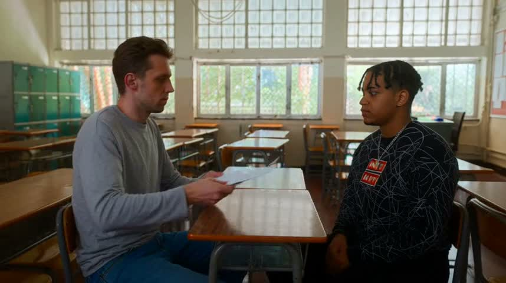
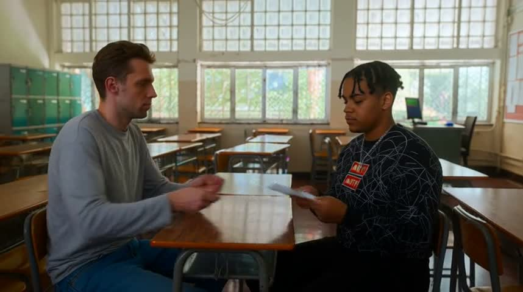
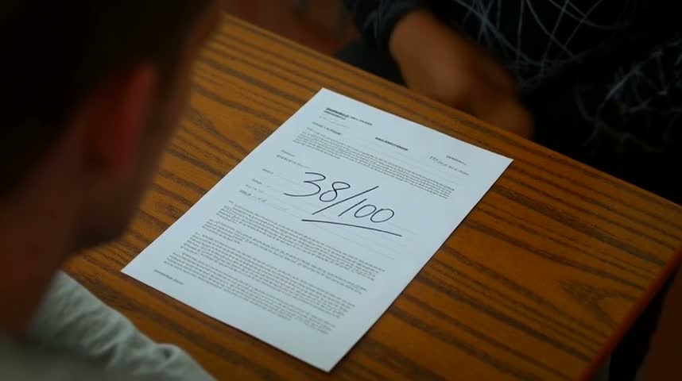
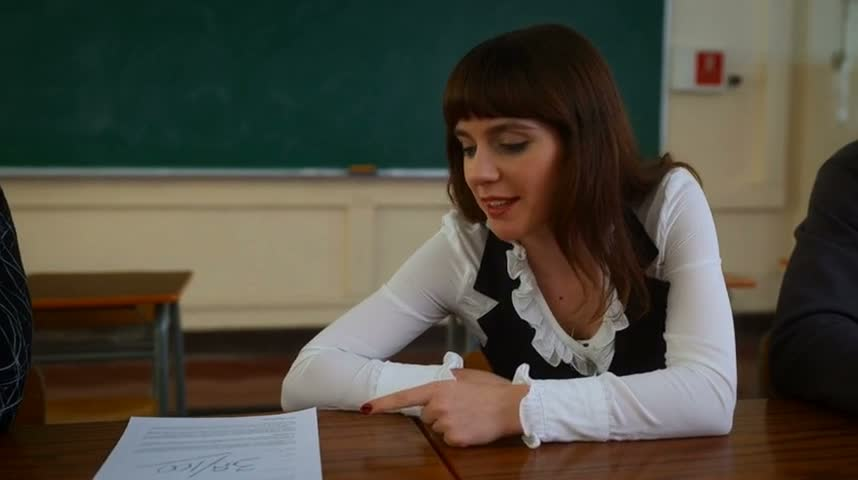
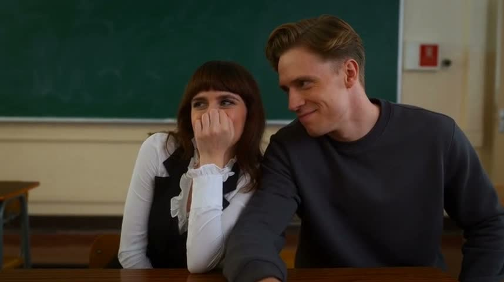
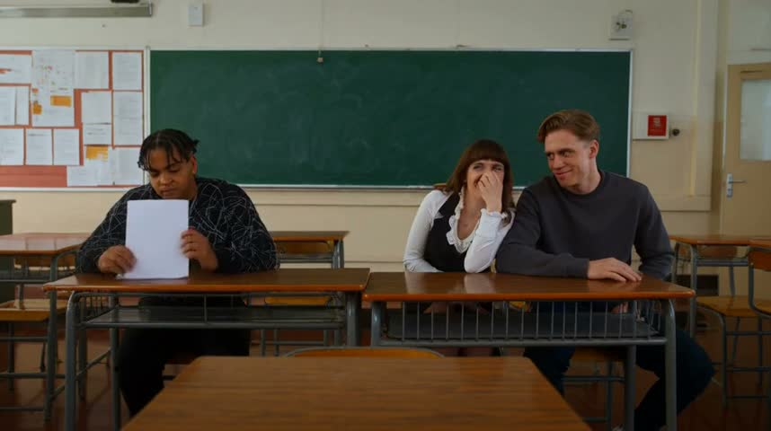
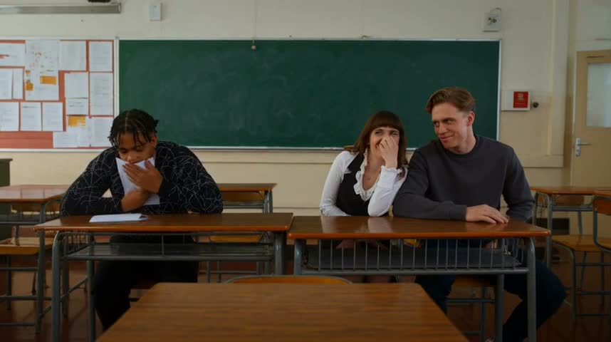
| beat | subject present | action seen | evidence |
|---|---|---|---|
| 1 | yes | yes | The teacher initially holds a sheet across the desk; at 1.5 s, seated Evan has received it with the blank side visible. |
| 2 | yes | unclear | At 4.5 s, the test lies face-up with a large, clear 38/100. The supplied frames establish the reveal but do not show Evan turning the sheet over. |
| 3 | yes | yes | At 7.5 s, Maya leans from the adjacent desk and extends her index finger toward the scored test. |
| 4 | yes | unclear | At 10.5 s, Leo leans toward Maya and visibly smirks. His arm is beside her, but an elbow nudge is not clearly established by the sampled frame. |
| 5 | yes | no | All three requested expressions or gestures are present: Evan hides the score, Maya covers her grin, and Leo smirks. However, Evan changes from holding the paper upright at 13.5 s to bending forward and clutching it against himself in the last frame, so the tableau is not still. |
| exact words | '38/100' reads “38/100” yes |
| identity vs the reference | teacher yes The teacher retains the reference's short wavy brown hair, long angular face, grey long-sleeve shirt, and blue jeans. Evan yes Evan retains the short hanging braids, facial appearance, necklace, and distinctive black sweatshirt with white intersecting lines and red chest patches. Maya yes Maya retains the brown hair with a blunt fringe, similar facial features, white ruffled blouse, and black waistcoat. Leo unclear Leo has a similar swept, side-parted hairstyle, but his facial proportions do not provide a confident match to the monochrome portrait. He is shown in colour wearing a dark crewneck rather than the reference's formal suit. classroom yes The room preserves the distinctive gridded upper windows, green lockers, wooden desks with metal frames, teacher's computer desk, and green chalkboard. |
| same people and place | yes |
| last frame holds | no |
| artifacts | none noted |
| failures | beat 5 must visibly show: Still tableau: @evan shields score; @maya conceals grin; @leo smirks. (seen: All three requested expressions or gestures are present: Evan hides the score, Maya covers her grin, and Leo smirks. However, Evan changes from holding the paper upright at 13.5 s to bending forward and clutching it against himself in the last frame, so the tableau is not still.); the final two seconds hold one still image with no new action |
clip-2.mp4 · review FAIL · state record: evan: Evan has short black hair, a navy hoodie, and round glasses.; maya: Maya has a dark ponytail, a mustard cardigan, and silver stud earrings.; leo: Leo has curly brown hair, a gray sweatshirt, and a red wristband. at The second-floor classroom has cream walls, east windows facing a paved courtyard, and desks in rows., ; words seen: '38/100' → “38/100”; last frame frames/clip-2-last.jpgraw
[
{
"clip": "clip-2.mp4",
"seconds": 15.1,
"people": [
"evan: Evan has short black hair, a navy hoodie, and round glasses.",
"maya: Maya has a dark ponytail, a mustard cardigan, and silver stud earrings.",
"leo: Leo has curly brown hair, a gray sweatshirt, and a red wristband."
],
"place": "The second-floor classroom has cream walls, east windows facing a paved courtyard, and desks in rows.",
"time": "",
"mood": "",
"words_seen": [
{
"text": "38/100",
"exact": true,
"reads": "38/100"
}
],
"identity": [
{
"evidence": "The teacher retains the reference's short brown hair, long narrow face, grey long-sleeve shirt, and blue jeans.",
"carried": "teacher",
"same_as_reference": "yes"
},
{
"evidence": "Evan retains the reference's braids, facial appearance, necklace, and black sweatshirt with white linework and red chest patches.",
"carried": "Evan",
"same_as_reference": "yes"
},
{
"evidence": "Maya retains the brown hair with blunt fringe, similar facial features, white ruffled blouse, and black waistcoat.",
"carried": "Maya",
"same_as_reference": "yes"
},
{
"evidence": "Leo's swept, side-parted hair and narrow facial features resemble the portrait in colour. His formal portrait clothing is replaced by a dark crew-neck sweatshirt.",
"carried": "Leo",
"same_as_reference": "yes"
},
{
"evidence": "The room preserves the distinctive gridded windows, upper window air conditioners, green lockers, wooden desks with metal frames, and right-wall green chalkboard.",
"carried": "classroom",
"same_as_reference": "yes"
}
],
"last_frame": "frames/clip-2-last.jpg"
}
]